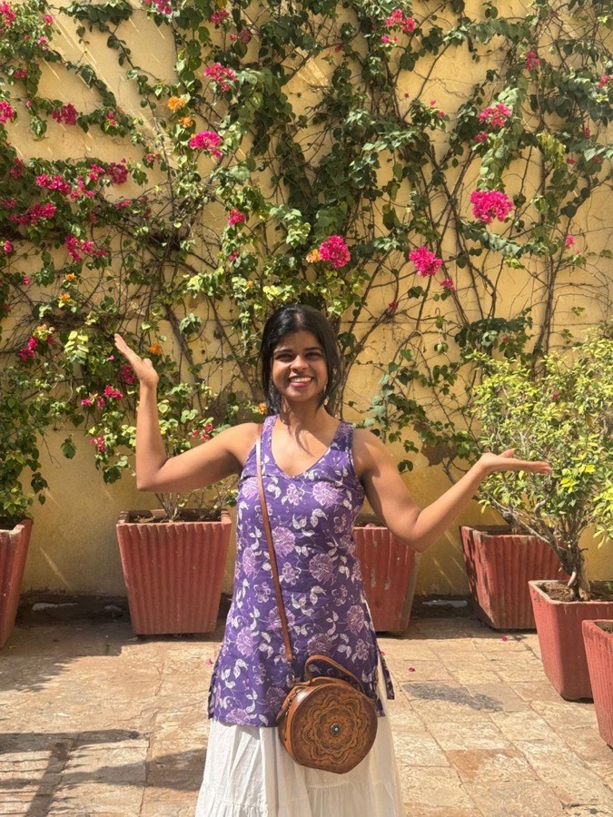
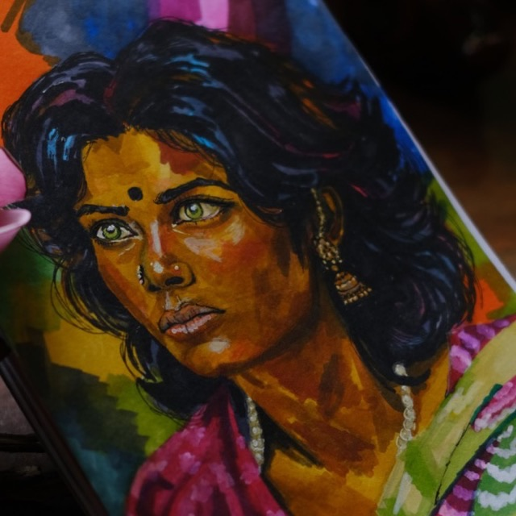

Senior UX Designer at FYERS with 4+ years of experience turning complex fintech into usable flows, thoughtful details, and painted-clear experiences.
Selected work
Selected work from the journal.
A few products that moved from messy notes to shipped experiences.
shipped, and still sailing.
entry no. 01
FYERS Academy
Turning market learning into a hands-on practice experience. I designed and built it as a fully working Android app in 3 months, and merged in “Learn by Doing”, a risk-free simulator built on real past market scenarios.
Making holdings, performance, and investment details easier to read and act on. I led positions and holdings design across mobile and web, from wireframes to developer handoff.
Helping partners track clients, onboarding, earnings, tickets, and performance in one clear place. Designed directly with the CEO and CXO, with a thumb-zone layout and light and dark mode.
Simplifying fast-moving trading journeys where clarity, timing, and trust matter — Single and Multi Order Windows on charts, Option Chain, Advanced Screeners, and a Watchlist revamp with tags and pinning.
Handpicked by the CXO for the Innovation Lab as a UX researcher and designer — exploring AI-assisted product ideas, faster prototyping, and building real software with Claude Code, Claude Design, VS Code, and GitHub.
Recognised for craft, collaboration, and ownership.
FYERS Force Award
For the best project, successfully launched — and for contribution, ownership, and consistent impact at FYERS.
Exceptional Team Player Award
Nominated by the entire design team — for collaboration, team support, and contributing beyond individual design work.
Kind words
What it’s like to work with me.
A few notes from people I’ve designed, researched, and shipped with.
“
Add a 2–3 sentence quote from a manager about how you work: your ownership, your craft, or a launch you led.
[Name][Role, FYERS]“
Add a quote from an engineer or PM about collaborating with you on a shipped product.
[Name][Role, FYERS]“
Add a quote from a designer you mentored or helped hire.
[Name][Role, FYERS]
Noticeboard
The noticeboard.
The things outside work that shape how I observe, create, and keep going.

hi, I’m Nikita!

Painting
Watercolours taught me patience, layering, and knowing when to stop.
Treks
Long routes remind me that clarity often comes one step at a time.
Trips
Travel keeps me curious about people, places, and behaviour.
Wall painting
Large-scale making taught me planning, detail, and teamwork.
showing up
Workouts
Showing up regularly teaches discipline — useful in design and life.
Recipe for a good flow1. Get the timing right 2. Balance every flavour 3. Taste, tweak, repeat
Cooking
A good recipe, like a good flow, needs timing, balance, and iteration.
Hosting events
Hosting helped me listen, organise, and make people feel included.
Crafts
Making by hand reminds me how much small details matter.
Coworkers
The best products are rarely solo work. Good collaboration means sharing the messy middle, not just the final screens.
psst — you can drag these around
How I work
Simplicity is not less thinking. It is better thinking.
Good UX starts with questions. I like sitting with messy problems long enough to understand what can be removed, what must stay, and what needs to become clearer.
Ask before designing
Map the messy parts
Keep what matters
Remove what confuses
Design for trust
Ship, learn, improve
Start with questions, not screens.
Before pixels, I want to understand what people are trying to decide, what makes them hesitate, and where trust breaks.
User interviews and usability testing
Primary and secondary research
Insight analysis that the whole team can act on
Connect the mess into a flow.
I turn notes and findings into journeys, then go looking for where they break — the edge cases, empty states, and moments of doubt.
User flows and journey maps
States, edge cases, and error handling
Constraints from product, compliance, and engineering
Keep what matters. Remove what confuses.
Simplicity is the hard part. I strip flows back to what helps people decide, then design the details that make it feel trustworthy.
Wireframes to high-fidelity, inside a design system
Thumb-zone and reachability for one-handed use
Light and dark mode, states, and microcopy
Ship it, watch it, improve it.
The work isn’t done at handoff. I stay close to engineering, and close to what real users do once it’s live.